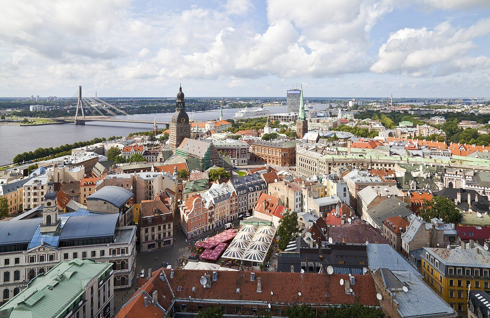
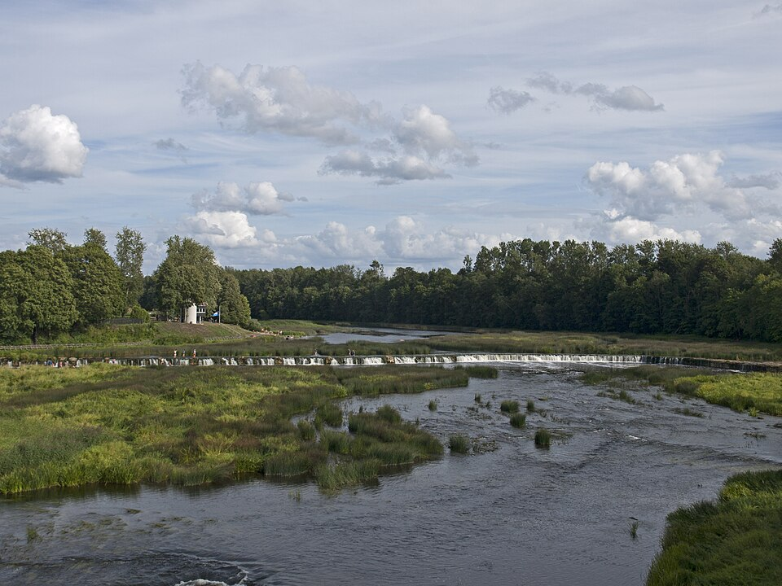
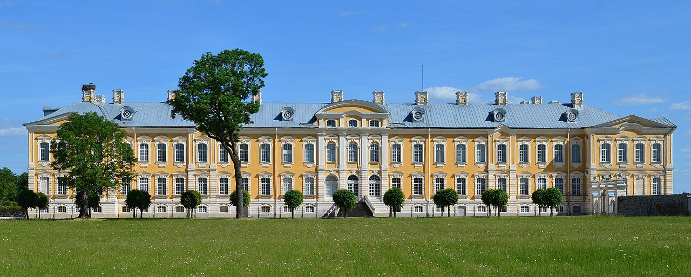
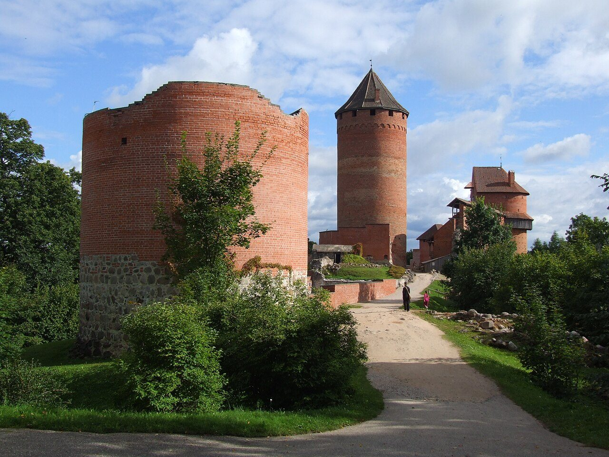

Latvia라트비아 Latvija
한자동맹의 도시 리가와 숲·습지·해안의 나라
- Capital
- 리가 (Rīga)
- Language
- 라트비아어
- Currency
- 유로 (EUR)

리가 구시가지Riga Old Town
쿨디가 벤타 폭포Venta Rapid, Kuldīga
룬달레 궁전Rundāle Palace
시굴다 투라이다 성Turaida Castle, SiguldaExplore Latvia
라트비아 더 알아보기
발트해 동부 해안에 위치한 라트비아는 중세 한자동맹 도시 리가와 울창한 숲·습지·호수·해안 생태를 함께 지닌 나라다. 동부 라트갈레의 종교문화와 서부 쿠르제메의 어촌생활, 남부 젬갈레의 농업환경이 뚜렷한 지역 차이를 만든다. 기술·바이오경제·재생에너지 분야에 투자를 유치하고 있으며, 발트해 물류망과 EU 단일시장의 접점에 있다.

Latest updates
라트비아 최근 뉴스
-
에스토니아 국방장관 드론이 북동·남동쪽에서 영공 진입, 라트비아는 블러드 곡물 통과 금지 추진
ERR에 따르면 에스토니아 헤렘 국방장관은 드론이 북동쪽과 남동쪽에서 에스토니아 영공에 들어왔다고 밝혔습니다. 기사 본문은 열지 못해 제목 기준입니다.
-
마크롱, 리투아니아에 카이사르 자주포 인도 앞당기겠다…공항 폐쇄 여파·대규모 문자 유출 사건
LRT에 따르면 나우세다 대통령은 마크롱 대통령이 리투아니아에 대한 카이사르 자주포 인도를 앞당기려 한다고 전했습니다.
-
발트 3국 밤새 드론 경보…리투아니아 NATO 전투기 출격·공항 폐쇄, 라트비아는 영공 진입 3대 확인
LRT에 따르면 11월 10일 밤 11시경 빌뉴스·우테나 지역에 경보가 발령된 뒤 곧 중부·북부 대부분으로 확대돼 적색 경보와 대피 요구까지 나왔습니다. NATO 전투기가 두 차례 출격했지만 드론을 격추하지 못했고, 비르자이 인근에서 NATO 전투기가 쏜 미사일 잔해가 발견됐습니다.